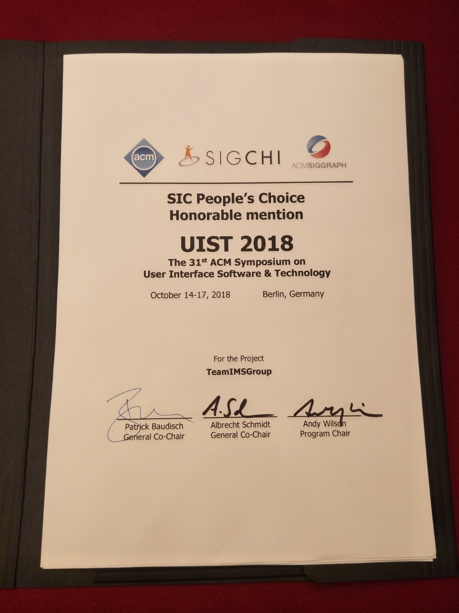
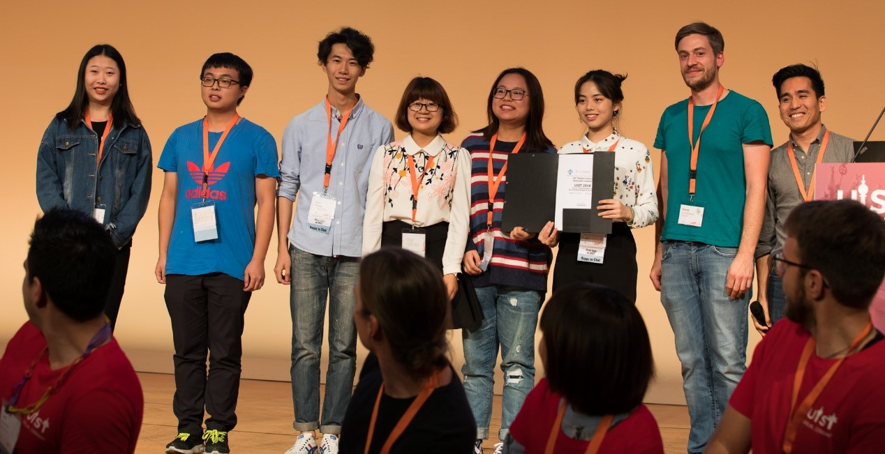
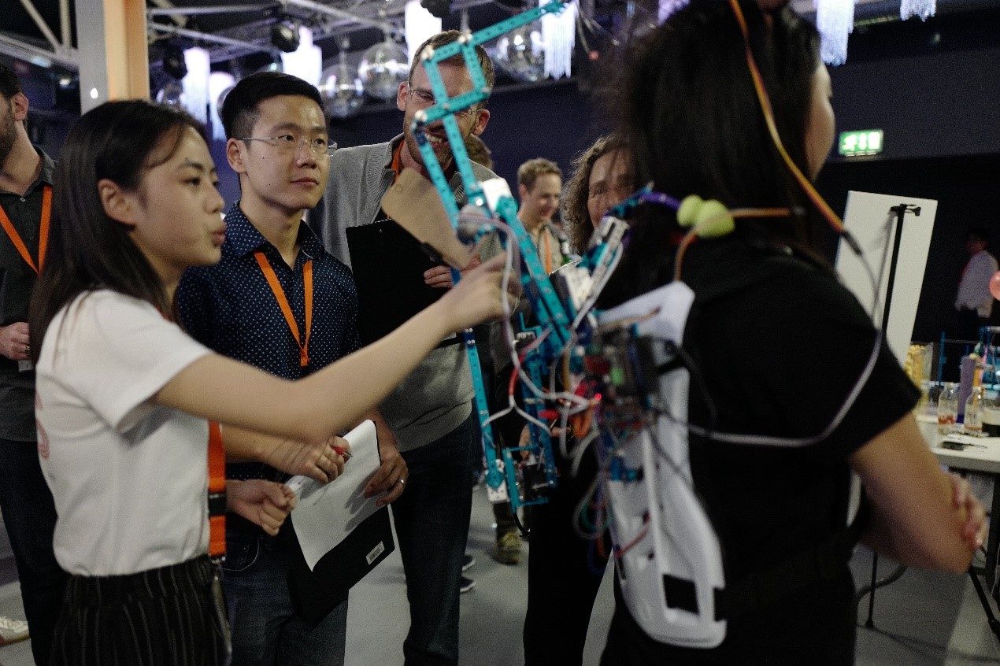
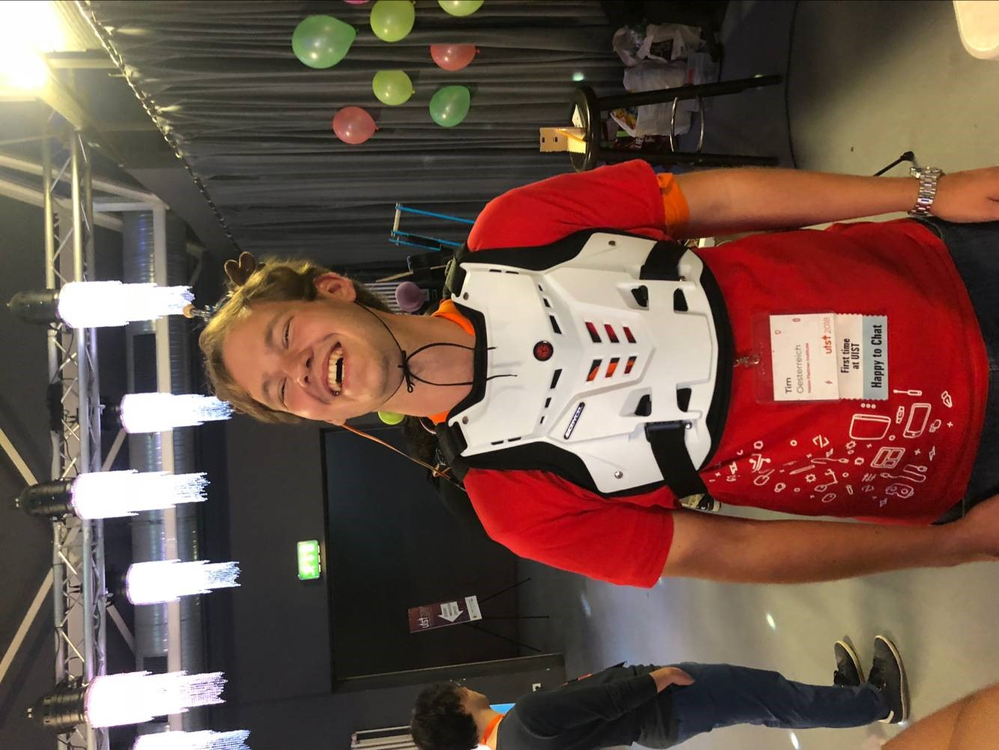
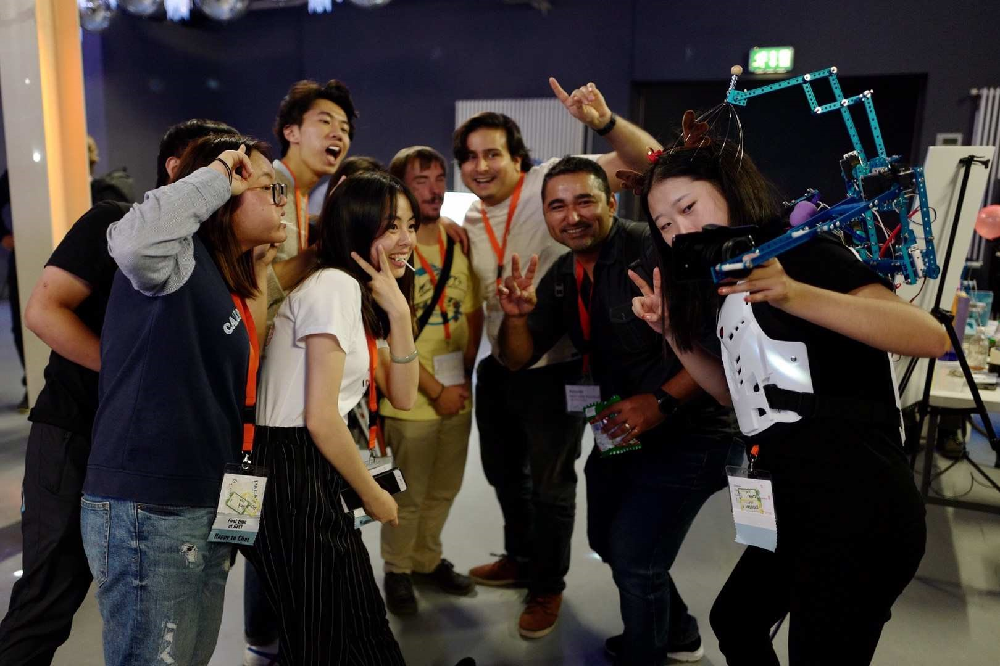

The Anmoji group has got the people’schoice award in UIST SIC track!
2018-10-21
The 31st Annual ACM Symposium on User Interface Software and Technology (UIST) was held in Berlin, Germany on October 14-17. The Anmoji team led by Qin Wu received the SIC People’s Choice Honorable mention award in the UIST 2018 International Conference and received a $500 award.
The ACM UIST International Conference is the top conference in the field of human-computer interaction. It belongs to the CCF Class B International Conference and ranks third in Google Scholar. In this student innovation contest, as the only undergraduate team in mainland China, we compete with the master candidates from Taiwan University, Stanford University, University of Michigan, Keio University, Japan, University of Tokyo, Seoul National University, Korea Science and Technology Institute, Calgary, Canada. The Anmoji project of the IMS Group, which consists of undergraduates from the Chengdu University of information technology, stood out in the competition, won the praise of the on-site judges and the audience, and obtain the SIC People’s Choice Honorable mention award.
On the day of the student competition, Chenmei Yu explained the design concept and core technology of the Anmoji wearable robot for the judges.
  